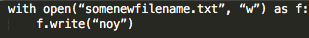

הצלחתי להחליף בין המילים איך עכשיו אני שומר את זה בקובץ חדש!?
היי נוי
פתיחה של קובץ במצב “w” למעשה מייצרת קובץ חדש (ודורסת מה שכבר קיים בקובץ, אם הוא קיים)
ואיך אני ידע לשמור אותו בקובץ חדש?
איך אני אמור לנסח את זה בקוד?
תקשיב לדעתי השבוע הזה הועבר בצורה לא טובה בכלל והסיבה היחידה שאני לא יצליח לסיים את כל התרגילים של השבוע הזה היא ששום נושא פה לא הועבר בצורה מובנת
אני כל השבוע ישבתי על התרגילים בניסיון לפתור אותם ועכשיו הגעתי לרגע המתסכל כבר שאני מבין שהזמן שלי כאן מתבזבז לחינם
מצטער לשמוע שזאת התחושה שלך.
מזכיר לך שזה לא חובה, ואם אתה מרגיש שאתה מבזבז את זמנך אין שום חובה שתמשיך.
אנחנו בוודאי לא נרצה לבזבז את זמננו (בהתנדבות) כדי לבזבז לך את הזמן.
אני אשמח לתת לך את תשובה הנכונה כדי שלא תלמד איך להשתמש בחומר הכתוב, ותוכל להמשיך להתלונן גם בהמשך:
כפי שכתוב במחברת, בשביל לפתוח קובץ חדש נשתמש בפקודה open
with open(“path/to/the/file.txt”, “w”)
אחרי שפתחנו את הקובץ במצב כתיבה נוכל לכתוב אליו ככה

4 לייקים
אני לא חושב שהבנת אותי נכון, אני ממש לא חושב ככה או מזלזל בהפקה שהרמתם פה, היא ממש לא קלה גם לאנשים שמתפרנסים מזה, ובטח שבטח לא כשעושים זאת מהתנדבות.
אני מרגיש תקוע, שיש שאלות מורכבות וקשות ולא היה מספיק חזרות ותרגול לפני וישר נזרקנו למים עמוקים מאוד.
תודה על התשובה.
כל הכבוד על הקורס והרצון ללמד וההשקעה.
לצערי השבוע גם אני מתקשה.
יש לי חוסר במידע איך לגשת לאיבר בתוך רשימה של רשימות
איך את ניגשת לאיבר הראשון ברשימה? ואם האיבר הזה הוא במקרה רשימה, איך את ניגשת לאיבר הראשון בתוכה?
לאיבר הראשון ברשימה [0] אבל לאיבר הראשון ברשימה הראשונה?
כשאת עושה [0] זה ממש נותן לך את האיבר הראשון, שהוא הרשימה הראשונה. אם רשימת הרשימות שלך נקראת list_of_lists אז list_of_lists[0] יחזיר לך את הרשימה הראשונה, ותוכלי לפנות לאיבר הראשון בה ממש באותו אופן
אני מבין את התסכול.
כשאני למדתי פייתון לא היה מי שילמד אותי, לקח לי בערך חודשיים להגיע לרמה של שבוע שלוש.
אומנם זה לוקח זמן, אבל למידה דרך הידיים היא הדרך הטובה ביותר.
לבקש מאיתנו להראות לך קוד כתוב לא יקדם אותך. זה הכי קל עבורנו, אני נותן לך קוד תוך רגע וזהו, אבל אני בוחר שלא לעשות את זה כי ברור לי לפי השאלה שלך שזה לא מה שאתה צריך. מה שאתה צריך זאת חווית הצלחה, ואם אני אתן לך את הקוד, זאת כבר לא חווית הצלחה.
מה שאני מציע לך זה לחזור קצת אחורה לתרגילים קודמים ולעשות אותם שוב תוך כדי שאתה מסביר לעצמך למה פתרת אותם כמו שפתרת.
פרט לתרגיל הזה, איזה תרגילים אחרים היו קשים עבורך? אני אנסה לתת לך תרגילים דומים כדי שתוכל לתרגל עוד.
3 לייקים
כרגע השגיאה שיש לי היא:
TypeError: map() must have at least two arguments.
הייתי שמח לחזור אחורה ללמוד, לא היה פשוט איפה הופכים את הגיבריש לעברית, שהיה רשום למצוא לבד, או איך בידיוק אני יכול ליצור קובץ חדש.
מעריך מאוד ותודה רבה על ההקשבה הקריאה והזמן
כלומר אני חייבת שתי פעולות?
x = list_of_list[0]
y = x[0]
זה נכון בקובץ תקווה מארחת ובקובץ לקרא מי דגנים, the very best, השבוע קצת מייאש אותי.
תודה על הניסיון לעזור
אני לא מצליח להבין איך השגיאה הזאת נובעת מהתרגיל. שלח לי בפרטי את הקוד שלך להתבוננות
לא בהכרח, אפשר גם לעשות את זה בשורת קוד אחת  הכתיב x = list_of_lists[0][0] יספיק בהחלט
הכתיב x = list_of_lists[0][0] יספיק בהחלט
תודה רבה!!
אנסה הכל שוב גם אם לא אספיק להגיש
לייק 1
היי, מצרפת לפה את השאלה שרלוונטית לתרגיל תקווה.
כנראה ששמרתי את הקובץ וערכתי עליו שינויים, כרגע אני לא מצליחה להגיע אליו בכלל ומדפיס לי רשימה ריקה.
האם יש אפשרות לשחזר את הקובץ של השיר?
לשחזר באיסה מובן ?
אם את צריכה את הקובץ המקורי פשוט ניתן להוריד שוב את הקובצים של השבוע הזה ולקחת משם
הייתי פותחת את הקובץ ידנית כדי לבדוק אם הוא באמת נמחק או שההדפסה נובעת משגיאה בקוד.
אם הוא באמת נמחק כדאי לעשות את מה שאביעד אמר, ולפני שתתחילי שוב לעבוד על הקובץ כדאי ליצור לעצמך עותק שלו לגיבוי כדי לחסוך את העניין הזה בפעמים הבאות.
@Almog @aviadamar תודה לכם! סידרתי את זה:slight_smile:
2 לייקים